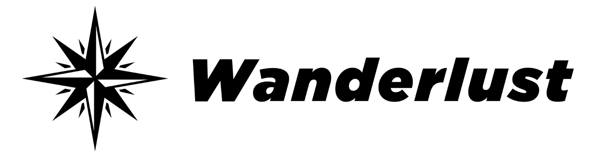

<meta charset="utf-8">
<meta name="viewport" content="width=device-width, initial-scale=1">
<title>Wanderlust 事例集 / Case Book</title>
<link rel="preconnect" href="https://fonts.googleapis.com">
<link rel="preconnect" href="https://fonts.gstatic.com" crossorigin>
<link href="https://fonts.googleapis.com/css2?family=Noto+Sans+JP:wght@400;500;700&family=Poppins:wght@500;600;700;800&display=swap" rel="stylesheet">
<style>
  :root{
    --ink:#111; --sub:#555; --line:#e3e3e3; --bg:#fff; --soft:#f6f6f6; --soft2:#fafafa;
    --mono:'Poppins',sans-serif; --jp:'Poppins','Noto Sans JP',sans-serif;
  }
  *{box-sizing:border-box}
  html,body{margin:0;padding:0}
  body{font-family:var(--jp);color:var(--ink);background:var(--bg);line-height:1.75;-webkit-font-smoothing:antialiased}
  .wrap{max-width:1160px;margin:0 auto;padding:0 24px}

  header.top{border-bottom:1px solid var(--line);padding:40px 0 28px}
  header.top .kicker{font-family:var(--mono);font-weight:600;letter-spacing:.14em;text-transform:uppercase;font-size:12px;color:var(--sub)}
  header.top h1{font-weight:700;font-size:26px;margin:10px 0 6px;line-height:1.4}
  header.top .meta{font-size:13px;color:var(--sub)}

  /* tabs */
  nav.tabs{position:sticky;top:0;z-index:20;background:var(--bg);border-bottom:1px solid var(--line)}
  nav.tabs .wrap{display:flex;gap:6px}
  nav.tabs button{flex:0 0 auto;font-family:var(--mono);font-weight:600;font-size:14px;letter-spacing:.04em;
    background:none;border:none;border-bottom:2px solid transparent;color:var(--sub);padding:16px 4px;margin-right:20px;cursor:pointer}
  nav.tabs button.active{color:var(--ink);border-bottom-color:var(--ink)}
  nav.tabs button:hover{color:var(--ink)}
  section.tab{display:none;padding:32px 0 90px}
  section.tab.active{display:block}

  .notice{border:1px solid #d9c48a;background:#fdf9ee;border-radius:8px;padding:12px 16px;font-size:13px;color:#5b4a1f;margin:0 0 26px}
  .notice b{font-weight:700}
  .notice code{font-family:var(--mono);font-size:12px;background:#fff;border:1px solid #e6dcbe;border-radius:3px;padding:0 4px}

  /* ===== TOC / DB ===== */
  .dbhead{display:flex;align-items:flex-end;gap:16px;flex-wrap:wrap;margin:0 0 12px}
  .dbhead h2{font-size:19px;font-weight:700;margin:0}
  .dbhead .cnt{font-family:var(--mono);font-size:12px;font-weight:600;color:var(--sub);margin-left:auto}
  .dbhead .cnt b{color:var(--ink);font-size:15px}

  .filters{border:1px solid var(--line);border-radius:10px;padding:10px 16px 14px;background:var(--soft2);margin:0 0 20px}
  .frow{display:flex;align-items:flex-start;gap:12px;padding:7px 0}
  .frow + .frow{border-top:1px dashed var(--line)}
  .flab{font-family:var(--mono);font-size:10.5px;font-weight:700;letter-spacing:.1em;color:var(--sub);flex:0 0 92px;padding-top:6px}
  .flab span{display:block;font-family:var(--jp);font-size:10px;letter-spacing:0;color:#999;font-weight:500}
  .fchips{display:flex;flex-wrap:wrap;gap:6px;flex:1}
  .fx{font-size:12px;font-weight:600;border:1px solid var(--line);background:#fff;border-radius:20px;padding:4px 12px;cursor:pointer;color:var(--sub);user-select:none;white-space:nowrap}
  .fx:hover{border-color:#999;color:var(--ink)}
  .fx.on{background:var(--ink);border-color:var(--ink);color:#fff}
  .fx .n{font-family:var(--mono);font-size:10px;opacity:.55;margin-left:5px}
  .ftools{display:flex;align-items:center;gap:12px;flex:1;justify-content:flex-end}
  #q{font-family:var(--jp);font-size:13px;border:1px solid var(--line);border-radius:20px;padding:6px 14px;width:230px;outline:none}
  #q:focus{border-color:#999}
  .reset{font-family:var(--mono);font-size:11px;font-weight:700;letter-spacing:.06em;color:var(--sub);background:none;border:none;cursor:pointer;text-decoration:underline}

  table.db{width:100%;border-collapse:collapse;font-size:14px}
  table.db th{font-family:var(--mono);font-size:11.5px;font-weight:700;letter-spacing:.06em;color:var(--sub);
    text-align:left;border-bottom:2px solid var(--ink);padding:9px 10px;white-space:nowrap;background:#fff;position:sticky;top:53px;z-index:8;cursor:pointer}
  table.db th .ar{color:#ccc;font-size:8px;margin-left:3px}
  table.db th.on{color:var(--ink)}
  table.db th.on .ar{color:var(--ink)}
  table.db td{border-bottom:1px solid var(--line);padding:11px 10px;vertical-align:middle}
  table.db tbody tr{cursor:pointer}
  table.db tbody tr:hover{background:var(--soft)}
  td.cid{font-family:var(--mono);font-size:11px;font-weight:700;color:var(--sub);white-space:nowrap}
  td.ctitle{font-weight:700;font-size:15px;min-width:250px;line-height:1.5}
  td.ctitle .cl{display:block;font-weight:500;font-size:12.5px;color:var(--sub);margin-top:1px}
  td.num{font-family:var(--mono);font-size:13px;white-space:nowrap}
  td.lb{min-width:120px}

  /* labels */
  .chip{display:inline-block;font-size:12px;font-weight:700;border-radius:4px;padding:2px 8px;white-space:nowrap;line-height:1.65;margin:1px 3px 1px 0}
  .chip.ind{border:1px solid currentColor}
  .chip.biz{border:1px solid #cfd6dd;background:#f2f5f8;color:#3d4a57;font-weight:600}
  .chip.tech{border:1px solid var(--line);background:var(--soft);color:#333;font-weight:600}
  .chip.money{font-family:var(--mono);border:1px solid var(--line);background:#fff;color:#333}
  .chip.draft{border:1px dashed #c8a94e;background:#fdf7e6;color:#8a6d1a;font-family:var(--mono);font-size:10px}
  .chip.fixed{border:1px solid #7aa88f;background:#eef7f2;color:#2f6b4f;font-family:var(--mono);font-size:10px}

  /* ===== Cases (text) ===== */
  .case{border-top:2px solid var(--ink);padding:22px 0 30px;scroll-margin-top:70px}
  .case .chead{display:flex;align-items:baseline;gap:12px;flex-wrap:wrap}
  .case .cno{font-family:var(--mono);font-weight:800;font-size:20px}
  .case h2{font-size:20px;font-weight:700;margin:0;line-height:1.45;flex:1 1 340px}
  .case .cright{display:flex;gap:4px;align-items:center;margin-left:auto}
  .case .clead{font-size:13.5px;color:var(--sub);margin:8px 0 0}
  .case .clead .src{display:block;font-family:var(--mono);font-size:11px;color:#999;margin-top:2px}
  .cbox .star{color:#8a6d1a;font-weight:700}
  table.meta{width:100%;border-collapse:collapse;font-size:12.5px;margin:16px 0 4px}
  table.meta td{border:1px solid var(--line);padding:7px 11px;vertical-align:top}
  table.meta td.k{background:var(--soft);font-family:var(--mono);font-size:11px;font-weight:700;color:var(--sub);white-space:nowrap;width:92px}
  .c3{display:grid;grid-template-columns:1fr 1fr 1fr;gap:18px;margin:18px 0 0}
  .c1{margin:16px 0 0}
  .cbox .bh{font-family:var(--mono);font-size:11px;font-weight:700;letter-spacing:.1em;color:var(--sub);border-bottom:1px solid var(--ink);padding-bottom:5px;margin-bottom:8px}
  .cbox .bh .jp{font-family:var(--jp);font-size:13px;font-weight:700;color:var(--ink);letter-spacing:0;margin-right:7px}
  .cbox .bh .no{font-family:var(--mono);font-weight:800;color:#2f97ff;margin-right:5px}
  .cbox ul{margin:0;padding-left:17px}
  .cbox li{font-size:13px;line-height:1.7;margin:3px 0}
  .mstrip{display:flex;gap:10px;flex-wrap:wrap;margin:18px 0 0}
  .mcell{border:1px solid var(--line);border-radius:8px;padding:9px 14px;min-width:132px;background:var(--soft2)}
  .mcell .mk{font-size:11px;color:var(--sub);font-family:var(--mono);font-weight:600}
  .mcell .mv{font-size:17px;font-weight:800;font-family:var(--mono);line-height:1.3}
  .mcell .mv.tbd{color:#c4c4c4}
  .clinks{margin:14px 0 0;font-family:var(--mono);font-size:11px;font-weight:700}
  .clinks a{color:var(--sub);text-decoration:none;border-bottom:1px solid var(--line);margin-right:16px;cursor:pointer}
  .clinks a:hover{color:var(--ink);border-color:var(--ink)}
  .empty{font-size:13px;color:var(--sub);padding:26px 0}
  .fnote{margin:14px 0 0;font-size:12px;line-height:1.85;color:var(--muted,#888);border-top:1px dashed var(--line);padding-top:12px}
  .fnote b{font-weight:700;color:#666}

  /* ===== SLIDE DECK (dark · Wanderlust deck style) ===== */
  .slidenote{font-size:12px;color:var(--sub);margin:0 0 18px;font-family:var(--mono)}
  .deck{display:flex;flex-direction:column;gap:24px}
  .slide{container-type:inline-size;position:relative;aspect-ratio:16/9;background:#0d0e12;color:#fff;
    border-radius:10px;overflow:hidden;padding:3cqw 4.8cqw 5cqw;box-shadow:0 3px 16px rgba(0,0,0,.22);
    display:flex;flex-direction:column}
  .slide,.slide *{box-sizing:border-box;font-family:var(--jp)}
  .slide .sh{display:flex;align-items:center;gap:1.6cqw;padding-bottom:1.7cqw;border-bottom:1px solid rgba(255,255,255,.16)}
  .slide .sh .bar{width:.7cqw;height:4cqw;background:#2f97ff;border-radius:2px;flex:0 0 auto}
  .slide .sh h4{font-size:2.55cqw;font-weight:800;margin:0;line-height:1.25}
  .slide .sh .sid{font-family:var(--mono);font-size:1.5cqw;font-weight:700;color:rgba(255,255,255,.4);flex:0 0 auto}
  .slide .mark{margin-left:auto;height:5cqw;width:auto;flex:0 0 auto;opacity:.95}
  .wlwhite{filter:invert(1);mix-blend-mode:screen}
  .slide .foot{position:absolute;left:4.8cqw;right:4.8cqw;bottom:2.4cqw;display:flex;justify-content:space-between;
    font-size:1.25cqw;color:rgba(255,255,255,.4);font-family:var(--mono)}
  .slide .body{padding-top:1.4cqw;display:flex;flex-direction:column;flex:1;min-height:0}

  .slide.title{background:radial-gradient(120% 90% at 50% 15%,#1b2436 0%,#0a0c11 60%);display:flex;
    flex-direction:column;align-items:center;justify-content:center;text-align:center;padding:6cqw}
  .slide.title h3{font-size:5.4cqw;font-weight:800;margin:0;line-height:1.35}
  .slide.title .sub{font-size:2.3cqw;color:rgba(255,255,255,.7);margin-top:2cqw}
  .slide.title .brand{margin-top:5cqw}

  .s-chips{display:flex;gap:.6cqw;flex-wrap:wrap;margin:0 0 1.3cqw}
  .s-chip{font-family:var(--mono);font-size:1.32cqw;font-weight:700;border-radius:4px;padding:.35cqw 1cqw;
    border:1px solid rgba(255,255,255,.22);color:rgba(255,255,255,.8);white-space:nowrap}
  .s-chip.ind{border-width:1.5px}
  .s-chip.money{background:rgba(47,151,255,.16);border-color:#2f97ff;color:#bcdcff}
  .s-chip.biz{background:rgba(255,255,255,.07)}
  .s-lead{font-size:1.75cqw;color:rgba(255,255,255,.82);line-height:1.5;margin:0 0 1.1cqw}
  /* 4ボックス（expo talk P13/P14 と同じ 2×2 構成） */
  .s4{display:flex;gap:1.2cqw;flex:1;min-height:0}
  .s4 .col{flex:1;display:flex;flex-direction:column;gap:1.2cqw;min-height:0;overflow:hidden}
  /* 各箱は内容量ぶんの高さ。列の最後の箱だけ余りを吸って下端を揃える */
  .s4 .box{flex:0 1 auto}
  .s4 .col > .box:last-child{flex:1 1 auto}
  .s4 .box{background:#16181f;border:1px solid rgba(255,255,255,.1);border-radius:8px;
    padding:1.1cqw 1.5cqw;display:flex;flex-direction:column;justify-content:flex-start;min-height:0;overflow:hidden;
    font-size:1.45cqw /* ← fitDeck() が溢れる箱だけこの値を縮める */}
  .s4 .ch{display:flex;align-items:center;gap:.9cqw;border-bottom:1px solid rgba(255,255,255,.16);padding-bottom:.6cqw;margin-bottom:.7cqw}
  .s4 .ch .cb{width:.5cqw;height:2.1cqw;background:#2f97ff;border-radius:2px;flex:0 0 auto}
  .s4 .ch .cn{font-size:1.95cqw;font-weight:800}
  .s4 .ch .ce{font-family:var(--mono);font-size:1.15cqw;color:rgba(255,255,255,.35);margin-left:auto}
  .s4 ul{margin:0;padding-left:1.4cqw}
  .s4 li{font-size:1em;line-height:1.42;margin:.24cqw 0;color:rgba(255,255,255,.92)}
  .s4 b{color:#fff}
  /* 文字を小さくする前に余白を詰めるモード（fitDeck が自動で付与） */
  .slide.tight .sh{padding-bottom:1.2cqw}
  .slide.tight .body{padding-top:1cqw}
  .slide.tight .s-chips{margin-bottom:.6cqw;gap:.5cqw}
  .slide.tight .s-chip{font-size:1.2cqw;padding:.28cqw .85cqw}
  .slide.tight .s-lead{font-size:1.62cqw;margin-bottom:.7cqw;line-height:1.38}
  .slide.tight .s4 .ch .cn{font-size:1.75cqw}
  .slide.tight .s4,.slide.tight .s4 .col{gap:1cqw}
  .slide.tight .s4 .box{padding:.85cqw 1.25cqw}
  .slide.tight .s4 .ch{padding-bottom:.45cqw;margin-bottom:.55cqw}
  .slide.tight .s4 li{margin:.1cqw 0;line-height:1.34}
  .s4 .star{color:#e7bf6a;font-weight:800}
  .s4 .mrow{display:flex;gap:1cqw}
  .s4 .mrow .mc{flex:1;background:#0f1117;border:1px solid rgba(255,255,255,.12);border-radius:7px;padding:.7cqw 1cqw}
  .s4 .mrow .mk{font-family:var(--mono);font-size:1.1cqw;color:rgba(255,255,255,.5);font-weight:600}
  .s4 .mrow .mv{font-family:var(--mono);font-size:1.9cqw;font-weight:800;color:#fff;line-height:1.25}
  .s4 .mrow .mv.tbd{color:rgba(255,255,255,.26)}

  table.s-idx{width:100%;border-collapse:collapse;font-size:1.95cqw}
  table.s-idx td{border-bottom:1px solid rgba(255,255,255,.12);padding:.85cqw .6cqw;color:rgba(255,255,255,.9);vertical-align:middle}
  table.s-idx td.i{font-family:var(--mono);font-weight:700;color:rgba(255,255,255,.42);white-space:nowrap;width:4%}
  table.s-idx td.t{font-weight:700}
  table.s-idx td.g{width:11%;white-space:nowrap}
  table.s-idx td.b{width:13%;white-space:nowrap;color:rgba(255,255,255,.7)}
  table.s-idx td.a{font-family:var(--mono);width:11%;white-space:nowrap;color:rgba(255,255,255,.62)}

  /* 改行ルール：句読点の後・矢印の前で折り返す（収まらない時だけ文中で折る） */
  .seg{display:inline-block}

  .slide .s-note{font-size:1.25cqw;line-height:1.6;color:rgba(255,255,255,.42);margin:1.2cqw 0 0}
  .deck.poster .slide .s-note{font-size:1.5cqw}
  .deck.poster table.s-idx{font-size:2.05cqw}
  .deck.poster table.s-idx th{font-size:1.6cqw}
  table.s-idx th{font-family:var(--mono);font-size:1.45cqw;font-weight:700;color:rgba(255,255,255,.45);
    text-align:left;padding:.45cqw .5cqw;border-bottom:1px solid rgba(255,255,255,.3);white-space:nowrap}

  /* ===== POSTER：構成はSlideと同じ・文字を大きく ===== */
  .deck.poster .sh h4{font-size:3.4cqw}
  .deck.poster .s-chip{font-size:1.7cqw;padding:.45cqw 1.2cqw}
  .deck.poster .s-lead{font-size:2.3cqw;font-weight:700;color:#fff;margin:0 0 1.4cqw}
  .deck.poster .s4,.deck.poster .s4 .col{gap:1.6cqw}
  .deck.poster .s4 .box{font-size:2.25cqw;padding:1.4cqw 1.8cqw;justify-content:center}
  .deck.poster .s4 .ch{padding-bottom:.8cqw;margin-bottom:.9cqw}
  .deck.poster .s4 .ch .cn{font-size:2.5cqw}
  .deck.poster .s4 .ch .ce{font-size:1.45cqw}
  .deck.poster .s4 li{margin:.45cqw 0;line-height:1.45}
  .deck.poster .foot{font-size:1.45cqw}
  .deck.poster .slide.tight .sh{padding-bottom:1.2cqw}
  .deck.poster .slide.tight .s-chip{font-size:1.5cqw;padding:.35cqw 1cqw}
  .deck.poster .slide.tight .s-lead{font-size:2.1cqw;margin-bottom:.9cqw;line-height:1.4}
  .deck.poster .slide.tight .s4,.deck.poster .slide.tight .s4 .col{gap:1.1cqw}
  .deck.poster .slide.tight .s4 .box{padding:1cqw 1.4cqw}
  .deck.poster .slide.tight .s4 .ch{padding-bottom:.5cqw;margin-bottom:.6cqw}
  .deck.poster .slide.tight .s4 .ch .cn{font-size:2.3cqw}
  .deck.poster .slide.tight .s4 li{margin:.16cqw 0;line-height:1.38}

  /* ===== PDF: 1 slide = 1 page (16:9) ===== */
  @media print{
    @page{size:338.7mm 190.5mm;margin:0}
    header.top,nav.tabs,.slidenote,.notice{display:none!important}
    section.tab{display:none!important;padding:0}
    section.tab.active{display:block!important}
    .wrap{max-width:none;padding:0;margin:0}
    .deck{gap:0}
    /* 端数で1枚が2ページに割れないよう、用紙より僅かに小さい実寸で固定 */
    .slide{border-radius:0;box-shadow:none;break-inside:avoid;break-after:page;
      width:338.7mm;height:190.2mm;aspect-ratio:auto;
      -webkit-print-color-adjust:exact;print-color-adjust:exact}
    .slide:last-child{break-after:auto}
  }
</style>

<header class="top"><div class="wrap">
  <div class="kicker">Wanderlust · Case Book</div>
  <h1>AX 支援事例集<br><span style="font-size:.7em;font-weight:500;color:var(--sub)">～ 業界 × 業務 × 技術で引ける事例データベース ～</span></h1>
  <div class="meta">西川 / 株式会社Wanderlust ｜ Draft 2026-08-04 ｜ 非公開（020_projects は gitignore）</div>
</div></header>

<nav class="tabs" id="tabs"><div class="wrap">
  <button data-tab="toc" class="active">Table of Contents</button>
  <button data-tab="cases">Text</button>
  <button data-tab="slide">Slide</button>
  <button data-tab="poster">Poster</button>
  <button data-tab="draft">Draft</button>
</div></nav>

<!-- ============ TOC ============ -->
<section class="tab active" id="toc"><div class="wrap">
  <div class="notice">
    <b>掲載は確認済みの7件。</b>自動車営業×保険RAG／製造業 人事部×RAG（EXPO登壇資料 P14・P13 をそのまま採用）／年金RAG／通信×全社DX戦略／公共×提案書自動生成／小売×データ分析／製造業 R&amp;D×ナレッジ検索。
    ファクト未確認のネタ出しは <b>Draft タブ</b>に分離しています（<code>status:'draft'</code>）。
    事例の追加は <code>CASES</code> 配列に1件足すだけで TOC / Text / Slide / Poster に同時反映。Poster 用の抜粋文は <code>POSTER</code> に別記します（未記入なら自動要約でフォールバック）。
  </div>

  <div class="filters">
    <div class="frow"><span class="flab">INDUSTRY<span>業界</span></span><div class="fchips" id="fInd"></div></div>
    <div class="frow"><span class="flab">FUNCTION<span>業務</span></span><div class="fchips" id="fBiz"></div></div>
    <div class="frow"><span class="flab">TECH<span>技術</span></span><div class="fchips" id="fTech"></div></div>
    <div class="frow"><span class="flab">REVENUE<span>顧客売上</span></span><div class="fchips" id="fRev"></div></div>
    <div class="frow"><span class="flab">DEAL SIZE<span>案件規模</span></span><div class="fchips" id="fAmt"></div>
      <div class="ftools"><input id="q" type="search" placeholder="キーワード検索"><button class="reset" id="reset">RESET</button></div>
    </div>
  </div>

  <div class="dbhead">
    <h2>事例一覧</h2>
    <span class="cnt"><b id="nShown">0</b> / <span id="nAll">0</span> 件　｜　行クリックで Text タブへ</span>
  </div>

  <table class="db">
    <thead><tr>
      <th data-sort="title">案件<span class="ar">▲▼</span></th>
      <th data-sort="industry">業界<span class="ar">▲▼</span></th>
      <th>業務</th>
      <th>技術</th>
      <th data-sort="revenue">顧客売上<span class="ar">▲▼</span></th>
      <th data-sort="amount">案件規模<span class="ar">▲▼</span></th>
      <th data-sort="period">期間<span class="ar">▲▼</span></th>
    </tr></thead>
    <tbody id="dbBody"></tbody>
  </table>
  <div class="empty" id="dbEmpty" style="display:none">該当する事例がありません。</div>

  <p class="fnote">
    ※ 本事例集は、実際にご支援した案件の詳細をそのまま掲載したものではありません。想定される課題や過去の事例から逆算し、一部の情報を調整・匿名化している箇所がございます。
    弊社が得意とする支援領域のイメージを膨らませていただく材料として、ご参考にしていただけますと幸いです。
  </p>
</div></section>

<!-- ============ TEXT ============ -->
<section class="tab" id="cases"><div class="wrap">
  <p class="slidenote">TOC のフィルタ結果がそのまま反映されます。</p>
  <div id="caseList"></div>
</div></section>

<!-- ============ SLIDE ============ -->
<section class="tab" id="slide"><div class="wrap">
  <p class="slidenote">登壇・商談用。Text タブと1:1対応（1事例 = 1スライド）。このタブを開いた状態で ⌘P → 背景グラフィックON で 1枚1ページの16:9 PDF。</p>
  <div class="deck" id="deck"></div>
</div></section>

<!-- ============ POSTER ============ -->
<section class="tab" id="poster"><div class="wrap">
  <p class="slidenote">展示会パネル用。構成は Slide と同じ4ボックスのまま、文字を大きくして重要点だけの抜粋（冗長な日本語を落とした短文版）にしています。PDF化の手順は Slide と同じ。</p>
  <div class="deck poster" id="posterDeck"></div>
</div></section>

<!-- ============ DRAFT ============ -->
<section class="tab" id="draft"><div class="wrap">
  <p class="slidenote">ネタ出し用のスケルトン置き場。ファクト未確認のため Slide / Poster / TOC / Text には出しません。中身が固まったら status を 'fixed' に変えるだけで本編に移動します。</p>
  <div class="deck" id="draftDeck"></div>
</div></section>

<script>
/* =======================================================================
   ラベル語彙（ここを直せば全タブのフィルタ・表示が変わる）
   ======================================================================= */
const INDUSTRY = {            /* 業界：意味を持つラベルなので配色あり */
  '保険':      '#2f6fb0',
  '金融':      '#a03a6a',
  '自動車':    '#b04a3a',
  '製造':      '#3f7a58',
  '化学':      '#7a5aa0',
  '物流':      '#b0722f',
  '不動産':    '#8a6a3a',
  '通信':      '#2f8090',
  'エネルギー':'#b09a2f',
  'エンタメ':  '#a03a6a',
  'コンサル':  '#5a6470',
  '公共':      '#4a6a7a',
  '小売':      '#5a8a2f'
};
const REVENUE = ['3兆〜','1兆〜','3,000億〜','1,000億〜','500億〜'];
const AMOUNT  = ['5,000万〜','3,000万〜','2,000万〜','1,000万〜','500万〜','300万〜'];
const BIZ     = ['人事','間接部門','DX部','営業','マーケティング','製造','R&D'];
const TECH    = ['FAQ','RAG','戦略コンサル','AIワークフロー'];

/* =======================================================================
   CASES : ここに事例を足すだけで TOC / Text / Slide / Poster に反映される
   ---------------------------------------------------------------------
   id       : 内部キー（画面には出さない。アンカー用）
   title    : 正式タイトル（Text / Slide / Poster の見出し）
   short    : 短縮タイトル（TOC の表と INDEX スライド用）
   client   : 表に出す社名。実名NGなら「大手◯◯メーカー」等の匿名表記
   industry : INDUSTRY のキー   revenue : REVENUE の値   amount : AMOUNT の値
   period / team / role / biz（業務ラベル）/ tech（技術ラベル）/ src（出典メモ）
   4項目（expo talk P13/P14 と同じ構成・スライドは2×2で描画）
     challenge : ① 状況と課題
     approach  : ② 解決策・システム構成 … 行頭「★…：」は強調表示になる
     result    : ③ 導入効果
     data      : ④ データの特徴（dataLabel で「支援の特徴」等に差し替え可）
   metrics  : [{k:指標名, v:数値}]  v:'' なら「要入力」表示
   status   : 'fixed' → TOC / Text / Slide / Poster に載る
              'draft' → Draft タブのみ（ファクト未確認のネタ出し置き場）
   ======================================================================= */
const CASES = [
  {
    id:'C01',
    title:'自動車ディーラー営業の保険提案支援（規定集3,000ページのRAG化）',
    short:'営業の保険提案支援',
    client:'自動車ディーラー（営業 約300名）', real:'',
    industry:'自動車', revenue:'', amount:'',
    period:'', team:'',
    role:'課題選定〜PoC〜本開発',
    biz:['営業'], tech:['RAG'],
    src:'EXPO登壇資料 P14「いい課題の具体例②（ROI高 × データ難易度高）」',
    lead:'商談中の営業が、車種ごとの最適な保険プランをその場で提示できる状態にした事例。ROIは高く、扱うデータの難易度も高い。',
    challenge:[
      '対象＝自動車ディーラーの営業 約300名（商談中に使用）',
      '販売時に保険の説明が必要。規定集は約3,000ページ',
      '車種ごとの最適プランを即座に作れず、本部・保険会社への照会でお客さまを待たせる'
    ],
    approach:[
      '車種・重視する点・家族構成を入力し、おすすめ保険と金額プランを提示',
      '細かい質問はその場でチャット検索して即答',
      '★最重要：グラウンディング（根拠付け）を徹底。不明確な場合は回答せず、本部の専門チームへ回す'
    ],
    result:[
      '対面の質問の30%をチャットで解決し、本部への電話確認が不要になった',
      '本部の負担が軽減し、営業は本来の販売業務に時間を割ける',
      '年間数千万円規模のコスト削減。お客さまは複数社のプランを即座に比較できる'
    ],
    data:[
      'ROIは高いが、扱うデータの難易度も高い',
      'ソース＝非構造データを含むPDF（規定集・カタログ）',
      '規定集は処理しやすい。カタログは表形式を検索対象にして負荷を下げる'
    ],
    metrics:[{k:'チャット解決率',v:'30%'},{k:'コスト削減',v:'年数千万円'},{k:'対象営業',v:'約300名'}],
    status:'fixed'
  },
  {
    id:'C02',
    title:'人事部の問い合わせ対応支援（マニュアル300ページのRAG化・虎の巻）',
    short:'人事の問い合わせ対応支援',
    client:'製造業 人事部 約15名／利用者 全社 約500名', real:'',
    industry:'製造', revenue:'', amount:'',
    period:'', team:'',
    role:'課題選定〜PoC〜本開発',
    biz:['人事','間接部門'], tech:['RAG','FAQ'],
    src:'EXPO登壇資料 P13「いい課題の具体例①」',
    lead:'全社から人事部へ集まる問い合わせを、チャットボットによる自己解決と人事部の回答支援（虎の巻）の二段構えで受けた事例。',
    challenge:[
      '対象＝人事部（問い合わせ対応 約15名）／利用者＝全社 約500名',
      '労務・育休・給与など多様な質問が電話とメールで頻発',
      '約300ページの人事マニュアルを都度確認して回答するため、時間と負荷が大きい'
    ],
    approach:[
      'ハイブリッド対応：定型はチャットボットで自己解決し、複雑な質問は人事部へ転送',
      '★最重要：すべてを従業員に自己解決させない。人事部15名の回答支援ツール（虎の巻）として使う',
      '担当者はRAGの結果をもとに、300ページを正確に把握して即答'
    ],
    result:[
      '人事部：対応が高速化し、15名中5名分の工数を削減（他業務へシフト）',
      '従業員：人事への質問に即レスポンスが返り、UXが向上'
    ],
    data:[
      'ソース＝Word中心のPDFドキュメント',
      '画像や複雑な非構造データを含まず、テキストが主体',
      'RAGで処理しやすく、高い検索精度が期待できる'
    ],
    metrics:[{k:'工数削減',v:'15名中5名分'},{k:'利用者',v:'全社約500名'},{k:'対象文書',v:'約300ページ'}],
    status:'fixed'
  },
  {
    id:'C03',
    title:'年金関連の問い合わせ対応RAG（中間FAQ × 2段階検索）',
    short:'年金照会対応RAG',
    client:'生命保険会社（年金事業部・担当 20名）', real:'',
    industry:'保険', revenue:'', amount:'',
    period:'', team:'',
    role:'課題選定〜PoC〜本開発',
    biz:['間接部門'], tech:['RAG','FAQ'],
    src:'Kyo 口述（社名は非表示）',
    lead:'クライアントから年金事業部へ届くメール問い合わせを、担当者の回答支援として受けた事例。中間FAQを挟む2段階検索で工数を60%削減した。',
    challenge:[
      'クライアントから年金事業部へ、メールで年金に関する質問が寄せられる',
      '担当20名がメールでの問い合わせ（Q&A）に対応',
      'クライアントが直接聞くのではなく、担当者が質問を貼り付けて回答を出力する業務支援型のUX',
      '受給条件から給与系まで質問が広く、200〜300ページのマニュアルにもとづいて回答する必要がある'
    ],
    approach:[
      '★最重要：2段階検索。（a）全体に全文検索をかける前に、まず「中間のFAQデータ群」を検索する',
      '（b）FAQで解決しない場合のみ、マニュアル等の全体データを検索',
      'FAQの動的更新：頻出の質問を中間FAQとして保持し、随時更新する'
    ],
    result:[
      '15人分の工数のうち60%を削減',
      '頻出の質問が多く、大半がFAQ経由で自己解決・即時回答に至った'
    ],
    data:[
      'テキストが中心。マニュアルに加え、過去のメールQ&A履歴もソースに活用',
      '頻出の質問を自動検知し、中間FAQを更新する学習ループを実装',
      'セマンティック検索＋古典的アルゴリズム＋ルールベース分岐のハイブリッド検索'
    ],
    metrics:[{k:'工数削減',v:'60%（15人分）'},{k:'対応体制',v:'20名'},{k:'対象文書',v:'200〜300p'}],
    status:'fixed'
  },
  {
    id:'C04',
    title:'全社DX戦略の伴走（外部のDX戦略部として）',
    short:'全社DX戦略の伴走',
    client:'通信会社（経営企画・DX推進部門）', real:'',
    industry:'通信', revenue:'', amount:'',
    period:'', team:'',
    role:'全体戦略の策定〜勉強会〜PoCまで一気通貫',
    biz:['DX部'], tech:['戦略コンサル','AIワークフロー'],
    src:'飯野 口述（「課題の具体例：通信会社 × 全体戦略」）',
    dataLabel:'支援の特徴', dataLabelShort:'支援の特徴', dataEn:'HOW WE WORK',
    lead:'会社全体のDXアジェンダを横串で管理する組織に対し、WanderlustがAIネイティブな外部のDX戦略部として入り、全体戦略を描いた事例。',
    challenge:[
      '対象＝会社全体のDXアジェンダを横串で管理する、経営企画やDX推進部門のような組織',
      'データや課題は大量に存在するが、社内のリテラシーが追いついていない',
      '各戦略の連動性が低い'
    ],
    approach:[
      '各事業部へのヒアリング、データと課題の棚卸しを実施',
      'AIネイティブなDX部門として、Wanderlustが外部からDX戦略部の役割を担い、全体の戦略を描く',
      '勉強会からPoCまで一気通貫で実施し、若手の育成と具体的な課題の洗い出しを促進'
    ],
    result:[
      '次に取り組むべき課題が明確になり、効果測定を逆算できるようになった',
      '共同でアサインした社内メンバーが成長し、DX人材の育成につながった'
    ],
    data:[
      '社内の組織図を深く理解し、DXインパクトの大きい事業部の担当者を見極めてアプローチする',
      '定期的なヒアリングで、新しいテーマが浮上した際に都度すぐ検討を進める',
      '★最重要：「やりたいこと」を並べず「やらないこと」を決めてフォーカスする。取捨選択の上で着実に進捗を出す'
    ],
    metrics:[{k:'関与範囲',v:'全社横断'},{k:'進め方',v:'勉強会→PoC'},{k:'副次効果',v:'人材育成'}],
    status:'fixed'
  },
  {
    id:'C05',
    title:'事業公募の提案書自動生成（リサーチ〜生成まで全自動）',
    short:'提案書の自動生成',
    client:'公共インフラ事業者（提案書作成部隊）', real:'',
    industry:'公共', revenue:'', amount:'',
    period:'', team:'',
    role:'課題選定〜PoC〜本開発',
    biz:['営業'], tech:['AIワークフロー','RAG'],
    src:'Kyo 口述（「公共事業 × 提案書自動生成」）',
    dataLabel:'技術・データの特徴', dataLabelShort:'技術・データの特徴', dataEn:'TECH & DATA',
    lead:'自治体・インフラ系企業・ビル管理会社などの事業公募に対する提案書作成を、リサーチから生成まで全自動化した事例。',
    challenge:[
      '自治体・インフラ系企業・ビル管理会社などの事業公募に、要件をヒアリングして毎回応募している',
      '提案書の作成に多大な工数がかかっている',
      '流れ：埋めるべき項目を把握 → 項目ごとにリサーチ → 人が提案書を作成'
    ],
    approach:[
      '提案書のデザイン、ヒアリング内容の理解、対応する内容の生成をAIが担う',
      'リサーチから提案書の生成までをAIが行い、工数を大幅に削減'
    ],
    result:[
      '提案書を作成する部隊の工数を約40%削減',
      '相見積もりにおける受注率（勝率）が向上',
      '網羅的なリサーチの上で具体的に内容を埋めるため、提案の質が上がり勝ちやすくなる'
    ],
    data:[
      'コンテクストの補強：議事録をそのまま読ませず、アノテーションで補完して保存。背景と文脈を正確に伝え、要件への理解を深めさせる',
      'ハイブリッドな検索ソース：社内ドキュメントに加え、インターネット検索も含む構成',
      '★生成クオリティ：一般的なRAGは検索して提示するだけで終わるが、本件は提案書の作成がゴールのため、生成部分の精度まで作り込む'
    ],
    metrics:[{k:'工数削減',v:'約40%'},{k:'受注率',v:'向上'},{k:'自動化範囲',v:'リサーチ→生成'}],
    status:'fixed'
  },
  {
    id:'C06',
    title:'販売実績データの自然言語分析（Text-to-SQL × ダッシュボード自動生成）',
    short:'販売データの自然言語分析',
    client:'小売（販売実績をモニタリングするPM部隊）', real:'',
    industry:'小売', revenue:'', amount:'',
    period:'', team:'',
    role:'課題選定〜PoC〜本開発',
    biz:['マーケティング'], tech:['AIワークフロー'],
    src:'Kyo 口述（「課題の具体例：小売 × データ分析」）',
    dataLabel:'機能・データの特徴', dataLabelShort:'機能・データの特徴', dataEn:'FUNCTION & DATA',
    lead:'大量の販売実績データを、自然言語のプロンプトだけで検索・可視化できるようにした事例。ExcelとBIツールによる定型作業を置き換え、データ分析を全社に開いた。',
    challenge:[
      '対象＝販売実績データをモニタリング・管理するPM部隊',
      '毎日・毎週、決まったフォーマットでExcelやBIツールから検索していた'
    ],
    approach:[
      'ローデータ（テーブルデータ）をAIに読み込ませ、データ分析を簡易化',
      '★最重要：数百万行超のテーブルデータのため、LLMで直接処理せず自然言語処理とSQL処理を分離。テーブルデータ専用の処理系を構築',
      '裏側でSQL的な処理をさばき、テキストとSQLを相互に行き来する仕様',
      'BIツール的な可視化やダッシュボード管理も、プロンプトでデザインを構築'
    ],
    result:[
      '従来必要だった処理と説明用の可視化が自然言語のプロンプトだけで済み、工数を30%削減',
      'データの民主化：全社がデータ分析にアクセスでき、必要なデータを即座に得られる',
      '人が気づかなかったインサイトの抽出や、異常値のアラート検知が可能になった',
      '需要予測などの将来予測にも活用でき、より的確な施策を打てる'
    ],
    data:[
      'SQL的な検索に加え、自然言語での検索と提案が可能',
      '他のメンバーも自然言語で状況を問い合わせられる',
      'データ＝数百万行超のテーブル（ローデータ）。RDB前提の処理系が必要'
    ],
    metrics:[{k:'工数削減',v:'30%'},{k:'データ規模',v:'数百万行超'},{k:'利用範囲',v:'全社（自然言語）'}],
    status:'fixed'
  },
  {
    id:'C07',
    title:'R&Dナレッジの検索RAG（約50年分の実験データをLLM-ready化）',
    short:'R&Dナレッジの検索',
    client:'製造業 R&D事業部', real:'',
    industry:'製造', revenue:'', amount:'',
    period:'', team:'',
    role:'課題選定〜データ基盤構築〜本開発',
    biz:['R&D'], tech:['RAG'],
    src:'Kyo 口述（「R&D検索のRAG」）',
    dataLabel:'技術的な工夫', dataLabelShort:'技術的な工夫', dataEn:'TECH',
    lead:'約50年分の実験データを検索可能にし、暗黙知の継承と、新しい発明・発見の創出につなげる事例。',
    challenge:[
      '50年近く前からの実験データが、紙・PDF・Word・Excelで散在している',
      '検索可能にし、過去の暗黙知が確実に継承される状態をつくる',
      'AIの力で新しい発明・発見を創出しやすくする'
    ],
    approach:[
      'まずデータ基盤を構築。非構造データが多いため、グラフや専門用語にも対応した「LLM-ready」な基盤を作り、そこを検索する',
      '検索精度の向上に伴い、将来的には発明・発見のサジェスチョン機能まで実現する',
      '化学物質や材料などの領域で、新たな組み合わせを提案する'
    ],
    result:[
      '再利用されていなかった暗黙知が形式知化され、時代を超えてノウハウを継承できる',
      '車輪の再発明を防ぎ、研究者がより最先端の研究に集中できるようになった'
    ],
    data:[
      '非構造データが極めて多いため、これらを適切に扱う',
      '★時系列：時系列をタグとして保持し、リランク時に古いデータの重要度を下げて最新データへ重みを乗せる',
      '専門用語が多いため、専用の辞書・参照辞書を作成して個別に対応する'
    ],
    metrics:[{k:'蓄積年数',v:'約50年'},{k:'データ形式',v:'PDF・Word・Excel'},{k:'次の展開',v:'発明のサジェスト'}],
    status:'fixed'
  },

  /* ---------- 以下 Draft（ファクト未確認 → Draft タブのみ） ---------- */
  {
    id:'D01',
    title:'保険約款・社内規程のRAG化による照会応答支援',
    short:'約款・規程の照会応答',
    client:'大手損害保険会社', real:'',
    industry:'保険', revenue:'3兆〜', amount:'3,000万〜',
    period:'', team:'', role:'課題選定〜PoC〜本開発',
    biz:['間接部門','営業'], tech:['RAG','FAQ'], src:'',
    lead:'約款・規程・過去の照会履歴を横断検索し、オペレーターへ根拠付きの回答候補を提示する。',
    challenge:['約款・規程が版管理されたPDFで散在し、根拠にたどり着くまでが長い','回答品質がオペレーターの経験に依存する','正しく答えられているかを測る仕組みがない'],
    approach:['照会頻度の高い領域に絞ってスコープを設定','チャンキングとリランクを含む検索精度の作り込み','LLM-as-a-Judgeと人手評価の二段構えで評価基盤を先に用意'],
    result:['（成果を記入）','（成果を記入）','（成果を記入）'],
    data:['ソース＝約款・規程のPDF（テキスト主体だが版が多い）','版管理と最新版の担保が前提条件','過去の照会履歴が正解データとして使える'],
    metrics:[{k:'照会対応時間',v:''},{k:'回答正答率',v:''},{k:'対象文書数',v:''}],
    status:'draft'
  },
  {
    id:'D02',
    title:'設計ナレッジ・過去不具合情報の横断検索',
    short:'設計ナレッジの横断検索',
    client:'大手自動車部品メーカー', real:'',
    industry:'自動車', revenue:'3兆〜', amount:'5,000万〜',
    period:'', team:'', role:'上流（課題選定）〜PoC〜本開発',
    biz:['製造'], tech:['RAG','戦略コンサル'], src:'',
    lead:'設計部門に閉じていた過去の検討内容と不具合情報を、設計者が自力で引ける状態にする。',
    challenge:['過去の検討経緯が個人フォルダと紙資料に分散','同じ検討と同じ失敗が部署をまたいで繰り返される','ベテランの退職でナレッジが失われつつある'],
    approach:['対象データを非構造の質・量の偏り・更新頻度で仕分け','効果測定できる業務（検索工数）に絞ってPoCを設計','現場の設計者を巻き込んだ定点観測でチューニング'],
    result:['（成果を記入）','（成果を記入）','（成果を記入）'],
    data:['ソース＝図面・検討書・紙資料のスキャン（非構造の比率が高い）','部署ごとに様式が異なり、前処理の難易度が高い','更新頻度は低く、蓄積型のデータ'],
    metrics:[{k:'検索工数',v:''},{k:'対象文書数',v:''},{k:'利用者数',v:''}],
    status:'draft'
  },
  {
    id:'D03',
    title:'技術文書・実験レポートのAI検索と要約',
    short:'実験レポートのAI検索',
    client:'大手化学メーカー', real:'',
    industry:'化学', revenue:'1兆〜', amount:'2,000万〜',
    period:'', team:'', role:'PoC〜本開発',
    biz:['製造','間接部門'], tech:['RAG'], src:'',
    lead:'図表と数式を含む研究レポートを対象に、出典付きで引ける検索環境を構築する。',
    challenge:['実験レポートが図表中心で、テキスト検索が効かない','過去の類似実験に当たれず、再実験のコストが発生する','出典が示されないAIの回答は研究部門に受け入れられない'],
    approach:['OCRと図表抽出で非構造データを検索可能な形に前処理','回答に必ず出典を添えるグラウンディング設計','研究員による正解セットを作り、精度を数値で管理'],
    result:['（成果を記入）','（成果を記入）','（成果を記入）'],
    data:['ソース＝図表と数式を含むレポートPDF（難易度が高い）','テキスト化できない情報が多く、抽出設計が要点','専門用語が密で、用語辞書の併走が必要'],
    metrics:[{k:'検索ヒット率',v:''},{k:'対象文書数',v:''},{k:'再実験削減',v:''}],
    status:'draft'
  },
  {
    id:'D04',
    title:'品質不具合レポートの自動分類・傾向分析',
    short:'不具合レポートの分類',
    client:'大手電池メーカー', real:'',
    industry:'製造', revenue:'3,000億〜', amount:'1,000万〜',
    period:'', team:'', role:'課題選定〜PoC',
    biz:['製造'], tech:['AIワークフロー'], src:'',
    lead:'自由記述の不具合レポートを構造化し、傾向を定点観測できる状態にする。',
    challenge:['不具合情報が自由記述で、集計と比較ができない','担当者ごとに書き方が違い、分類が属人的','改善の効果を数値で追えていない'],
    approach:['LLMで自由記述から項目を抽出して構造化','既存の分類体系に寄せたラベル設計と抜け漏れ検知','月次で傾向を追えるダッシュボードまでを一本の流れに'],
    result:['（成果を記入）','（成果を記入）','（成果を記入）'],
    data:['ソース＝自由記述のテキスト（短文・表記ゆれが多い）','件数が多く、分類精度の検証がしやすい','既存の分類体系が正解ラベルとして使える'],
    metrics:[{k:'分類精度',v:''},{k:'集計工数',v:''},{k:'対象件数',v:''}],
    status:'draft'
  },
  {
    id:'D05',
    title:'コンタクトセンターの応答支援とFAQ自動生成',
    short:'コンタクトセンター支援',
    client:'大手通信事業者', real:'',
    industry:'通信', revenue:'1兆〜', amount:'2,000万〜',
    period:'', team:'', role:'上流（課題選定）〜PoC',
    biz:['間接部門','営業'], tech:['FAQ','RAG'], src:'',
    lead:'応答ログを起点に、オペレーター支援とFAQ整備を同時に回す。',
    challenge:['問い合わせ内容が多岐にわたり、FAQ整備が追いつかない','新任オペレーターの立ち上がりに時間がかかる','ログが蓄積されているだけで活用されていない'],
    approach:['会話ログをクラスタリングし、頻出かつ高負荷の問い合わせを特定','頻出領域から順にRAGの応答支援を投入','応答ログからFAQ草案を自動生成し、運用側でレビュー'],
    result:['（成果を記入）','（成果を記入）','（成果を記入）'],
    data:['ソース＝会話ログ（大量・テキスト主体）','対応履歴が正解データとして使える','個人情報のマスキングが前提条件'],
    metrics:[{k:'平均応答時間',v:''},{k:'自己解決率',v:''},{k:'FAQ整備数',v:''}],
    status:'draft'
  },
  {
    id:'D06',
    title:'配車・庫内オペレーションのAIワークフロー化',
    short:'配車・庫内オペ',
    client:'大手物流会社', real:'',
    industry:'物流', revenue:'1,000億〜', amount:'1,000万〜',
    period:'', team:'', role:'課題選定〜PoC',
    biz:['製造','間接部門'], tech:['AIワークフロー','戦略コンサル'], src:'',
    lead:'属人化した配車と庫内の判断ルールを言語化し、AIワークフローとして再現する。',
    challenge:['配車判断がベテランの暗黙知に依存し、代替が効かない','帳票・メール・電話が混在し、情報が一箇所に揃わない','改善の効果を測る単位が決まっていない'],
    approach:['判断の分岐をヒアリングで言語化し、ルールとAIの担当範囲を分離','帳票とメールの取り込みを自動化して入力側を揃える','1拠点で効果測定してから横展開する順序を設計'],
    result:['（成果を記入）','（成果を記入）','（成果を記入）'],
    data:['ソース＝帳票とメール（半構造）に加え、電話は記録が残らない','入力側が揃っていないため、まず取り込みの整備が必要','日次で更新され、リアルタイム性の要求が高い'],
    metrics:[{k:'計画作成時間',v:''},{k:'対象拠点数',v:''},{k:'手戻り率',v:''}],
    status:'draft'
  },
  {
    id:'D07',
    title:'物件・契約書類の情報抽出と社内FAQ整備',
    short:'物件書類の情報抽出',
    client:'大手不動産会社', real:'',
    industry:'不動産', revenue:'1,000億〜', amount:'500万〜',
    period:'', team:'', role:'課題選定〜PoC',
    biz:['営業','間接部門'], tech:['FAQ','RAG'], src:'',
    lead:'物件資料と契約書から必要項目を抽出し、営業現場の照会をFAQ側で吸収する。',
    challenge:['物件資料のフォーマットが売主ごとに異なり、転記作業が発生する','同じ質問が営業から管理部門に繰り返し寄せられる','書類の版が複数あり、最新版が判別できない'],
    approach:['抽出対象の項目を業務側と確定してテンプレート化','頻出照会を棚卸ししてFAQを先に整備し、RAGは後段に置く','版管理のルールをデータ投入の前提条件として整理'],
    result:['（成果を記入）','（成果を記入）','（成果を記入）'],
    data:['ソース＝売主ごとに様式が異なるPDFとExcel','抽出項目は固定できるため、テンプレート化しやすい','版の管理が徹底されておらず、最新版の担保が課題'],
    metrics:[{k:'転記工数',v:''},{k:'照会件数',v:''},{k:'対象書類数',v:''}],
    status:'draft'
  },
  {
    id:'D08',
    title:'設備保全レポートの横断検索とナレッジ化',
    short:'設備保全の横断検索',
    client:'大手エネルギー事業者', real:'',
    industry:'エネルギー', revenue:'3,000億〜', amount:'3,000万〜',
    period:'', team:'', role:'上流（課題選定）〜PoC〜本開発',
    biz:['製造'], tech:['RAG','戦略コンサル'], src:'',
    lead:'保全記録と点検票を横断し、過去の類似事象から対処法を引けるようにする。',
    challenge:['点検票が拠点ごとの様式で、横断比較ができない','類似事象の対処ノウハウがベテランに閉じている','安全に関わるため、根拠のない回答は使えない'],
    approach:['拠点間で共通化できる項目だけを先に統合','根拠文書へのリンクを必須とした回答設計','保全部門の実タスクで探索時間を測定'],
    result:['（成果を記入）','（成果を記入）','（成果を記入）'],
    data:['ソース＝点検票と保全記録（拠点ごとに様式が異なる）','記録は構造化しやすいが、拠点間の名寄せが必要','安全情報のため、出典の提示が必須'],
    metrics:[{k:'類似事象探索時間',v:''},{k:'対象レポート数',v:''},{k:'利用拠点数',v:''}],
    status:'draft'
  },
  {
    id:'D09',
    title:'採用・人事オペレーションのAI化と評価設計',
    short:'採用・人事オペのAI化',
    client:'大手エンタメ企業', real:'',
    industry:'エンタメ', revenue:'500億〜', amount:'500万〜',
    period:'', team:'', role:'上流（課題選定）〜PoC',
    biz:['人事'], tech:['AIワークフロー','FAQ'], src:'',
    lead:'応募対応と社内問い合わせをAIワークフローに寄せ、人事の一次対応を圧縮する。',
    challenge:['応募者対応と社内問い合わせが同じ担当に集中している','制度の問い合わせが繁忙期に集中し、一次対応が滞る','人事領域はセンシティブで、誤答リスクの管理が必要'],
    approach:['一次対応をFAQで返せるものと人が返すべきものに切り分け','返答テンプレートと人のレビューを前提としたワークフロー化','誤答時のエスカレーション経路を先に定義'],
    result:['（成果を記入）','（成果を記入）','（成果を記入）'],
    data:['ソース＝人事制度のドキュメント（テキスト主体で処理しやすい）','個人情報を含むため、取り扱い範囲の線引きが前提','制度改定に合わせた更新運用が必要'],
    metrics:[{k:'一次対応工数',v:''},{k:'問い合わせ件数',v:''},{k:'一次解決率',v:''}],
    status:'draft'
  }
];

/* =======================================================================
   POSTER : 展示会パネル用の抜粋版テキスト（短文・大きい文字で読ませる）
   未記入の事例は CASES 側を自動要約してフォールバックする
   ======================================================================= */
const POSTER = {
  C01:{
    title:'自動車ディーラー営業 × 保険提案RAG',
    lead:'規定集3,000ページを、商談中に即答',
    challenge:['営業 約300名が商談中に保険を説明','規定集は約3,000ページ','本部への照会が必要で即答できない'],
    approach:['車種・家族構成からプランを提示','細かい質問はチャットで即答','★根拠付けを徹底、不明確なら本部へ'],
    result:['対面質問の30%をチャットで解決','本部への電話確認が不要に','年間数千万円のコスト削減'],
    data:['ROIは高く、データの難易度も高い','ソース＝規定集・カタログのPDF','カタログは表形式を検索対象に']
  },
  C02:{
    title:'製造業 人事部 × 問い合わせ対応RAG',
    lead:'マニュアル300ページを、担当15名の虎の巻へ',
    challenge:['人事15名が全社500名に対応','労務・育休・給与と質問が多様','300ページを都度確認して回答'],
    approach:['定型はボット、複雑は人事部へ','★担当者の回答支援として使う','RAGの結果をもとに即答'],
    result:['15名中5名分の工数を削減','従業員への回答が即時化'],
    data:['ソース＝Word中心のPDF','テキスト主体で処理しやすい','高い検索精度が期待できる']
  },
  C03:{
    title:'生命保険 年金部門 × 中間FAQ RAG',
    lead:'メール照会20名の工数を60%削減',
    challenge:['担当20名がメール照会に対応','マニュアルは200〜300ページ','受給条件から給与系まで質問が広い'],
    approach:['★まず中間FAQを検索','不足する場合のみ全体を検索','頻出質問をFAQへ随時反映'],
    result:['15人分の工数を60%削減','大半がFAQ経由で即時回答'],
    data:['メールのQ&A履歴も活用','頻出質問を自動検知しFAQを更新','セマンティック＋ルールの併用']
  },
  C04:{
    title:'通信 × 全社DX戦略',
    lead:'外部のDX戦略部として、全体戦略を描く',
    challenge:['課題とデータは大量にある','社内のリテラシーが不足','各戦略の連動性が低い'],
    approach:['全事業部のヒアリングと棚卸し','外部のDX戦略部として参画','勉強会からPoCまで一気通貫'],
    result:['取り組む課題が明確化','効果測定を逆算できる','社内人材の育成につながった'],
    data:['インパクトの大きい部署を選ぶ','新テーマは都度すぐ検討','★やらないことを決めて集中']
  },
  C05:{
    title:'公共事業 × 提案書の自動生成',
    lead:'リサーチから提案書作成まで全自動',
    challenge:['公募の提案書作成に多大な工数','リサーチと執筆を人が担当'],
    approach:['ヒアリング理解と生成をAIが担当','リサーチから生成まで自動化'],
    result:['作成部隊の工数を約40%削減','相見積もりの受注率が向上','提案の質が上がり勝率が上昇'],
    data:['議事録に注記を加え文脈を補強','社内文書＋Web検索を併用','★生成の精度まで作り込む']
  },
  C07:{
    title:'製造業 R&D × ナレッジ検索RAG',
    lead:'約50年分の実験データを検索可能にする',
    challenge:['紙を含む50年分の実験データが散在','PDF・Word・Excelに分かれている','暗黙知が継承されていない'],
    approach:['LLM-readyなデータ基盤を構築','グラフと専門用語に対応した検索','将来は発明・発見のサジェストへ'],
    result:['暗黙知を形式知化して継承','車輪の再発明を防止','研究者が最先端の研究に集中'],
    data:['非構造データを適切に扱う','★時系列をタグ化し新しさを重み付け','専門用語の辞書を個別に用意']
  },
  C06:{
    title:'小売 × 販売データの自然言語分析',
    lead:'ExcelとBIツールの定型作業を置き換える',
    challenge:['PM部隊が毎日・毎週の定型集計','ExcelとBIツールで手作業'],
    approach:['★自然言語処理とSQLを分離','テーブル専用の処理系を構築','プロンプトで可視化を生成'],
    result:['工数を30%削減','全社がデータにアクセス可能','異常値検知と需要予測にも活用'],
    data:['自然言語で検索と提案ができる','数百万行を超えるテーブルデータ','RDB前提の処理系が必要']
  }
};

/* ---------------- helpers ---------------- */
const el = (h)=>{const t=document.createElement('template');t.innerHTML=h.trim();return t.content.firstElementChild};
const esc = (s)=>String(s??'').replace(/[&<>"]/g,c=>({'&':'&amp;','<':'&lt;','>':'&gt;','"':'&quot;'}[c]));
const indColor = (n)=>INDUSTRY[n]||'#777';
const indChip  = (n)=>n?`<span class="chip ind" style="color:${indColor(n)};background:${indColor(n)}14">${esc(n)}</span>`:'<span style="color:#bbb">—</span>';
/* ---- 改行ルール（ルールベース） ----
   「。」「、」「：」の直後と「→」の直前を改行候補にし、各セグメントを inline-block にする。
   → 収まる限り句読点・矢印の位置で折り返し、収まらないときだけ従来どおり文中で折る。 */
const segWrap = (s)=>s.split(/(?<=[。、：])(?!$)|(?=→)/).filter(Boolean)
                      .map(x=>`<span class="seg">${x}</span>`).join('');
/* 「★…：」で始まる行は接頭辞を強調（expo talk の表記に合わせる） */
const liHtml   = (x)=>{
  const s=esc(x), m=s.match(/^(★[^：:]*[：:])([\s\S]*)$/);
  return m ? `<span class="star">${m[1]}</span>${segWrap(m[2])}` : segWrap(s);
};
const liList   = (a)=>(a||[]).map(x=>`<li>${liHtml(x)}</li>`).join('');
const txt      = (x)=>segWrap(esc(x));
const countBy  = (key,v)=>FIXED.filter(c=>Array.isArray(c[key])?c[key].includes(v):c[key]===v).length;
/* Poster 用：POSTER に無い事例は本文を短く切ってフォールバック */
const cut = (s,n)=>{s=String(s||'');return s.length>n?s.slice(0,n-1)+'…':s};
const pv  = (c)=>{
  const p=POSTER[c.id]||{};
  return {
    title:p.title||c.short||c.title,
    lead:p.lead||cut(c.lead,44),
    challenge:p.challenge||(c.challenge||[]).slice(0,3).map(x=>cut(x,34)),
    approach:p.approach||(c.approach||[]).slice(0,3).map(x=>cut(x,34)),
    result:p.result||(c.result||[]).slice(0,3).map(x=>cut(x,34)),
    data:p.data||(c.data||[]).slice(0,3).map(x=>cut(x,34))
  };
};

const FIXED  = CASES.filter(c=>c.status==='fixed');
const DRAFTS = CASES.filter(c=>c.status!=='fixed');

/* ---------------- filter state ---------------- */
const state = {ind:new Set(), biz:new Set(), tech:new Set(), rev:new Set(), amt:new Set(), q:'', sort:'title', dir:1};

function addChips(hostId,values,set,key,colored){
  const host=document.getElementById(hostId);
  values.forEach(v=>{
    const n=countBy(key,v);
    const b=el(`<span class="fx" data-v="${esc(v)}" data-c="${colored?1:0}">${esc(v)}<span class="n">${n}</span></span>`);
    if(colored){b.style.color=indColor(v);b.style.borderColor=indColor(v)+'55'}
    if(!n){b.style.opacity='.4'}
    b.onclick=()=>{
      set.has(v)?set.delete(v):set.add(v);
      const on=b.classList.toggle('on');
      if(colored){b.style.background=on?indColor(v):'#fff';b.style.color=on?'#fff':indColor(v)}
      render();
    };
    host.appendChild(b);
  });
}
function buildFilters(){
  addChips('fInd',  Object.keys(INDUSTRY), state.ind,  'industry', true);
  addChips('fBiz',  BIZ,                   state.biz,  'biz',      false);
  addChips('fTech', TECH,                  state.tech, 'tech',     false);
  addChips('fRev',  REVENUE,               state.rev,  'revenue',  false);
  addChips('fAmt',  AMOUNT,                state.amt,  'amount',   false);
}

function match(c){
  if(state.ind.size  && !state.ind.has(c.industry)) return false;
  if(state.rev.size  && !state.rev.has(c.revenue))  return false;
  if(state.amt.size  && !state.amt.has(c.amount))   return false;
  if(state.biz.size  && !c.biz.some(t=>state.biz.has(t)))   return false;
  if(state.tech.size && !c.tech.some(t=>state.tech.has(t))) return false;
  if(state.q){
    const hay=[c.title,c.short,c.client,c.industry,c.role,c.lead,...c.biz,...c.tech,
               ...c.challenge,...c.approach,...c.result,...(c.data||[])].join(' ').toLowerCase();
    if(!hay.includes(state.q.toLowerCase())) return false;
  }
  return true;
}
function sorted(list){
  const k=state.sort, d=state.dir;
  return [...list].sort((a,b)=>{
    let x,y;
    if(k==='amount'){x=AMOUNT.indexOf(a.amount);y=AMOUNT.indexOf(b.amount)}
    else if(k==='revenue'){x=REVENUE.indexOf(a.revenue);y=REVENUE.indexOf(b.revenue)}
    else if(k==='title'){x=CASES.indexOf(a);y=CASES.indexOf(b)}   /* 既定は掲載順 */
    else {x=String(a[k]||'');y=String(b[k]||'')}
    return (x<y?-1:x>y?1:0)*d;
  });
}

/* ---------------- render : TOC ---------------- */
function renderTOC(list){
  const tb=document.getElementById('dbBody'); tb.innerHTML='';
  list.forEach(c=>{
    const tr=el(`<tr>
      <td class="ctitle">${esc(c.short||c.title)}<span class="cl">${esc(c.client)}</span></td>
      <td>${indChip(c.industry)}</td>
      <td class="lb">${c.biz.map(t=>`<span class="chip biz">${esc(t)}</span>`).join('')}</td>
      <td class="lb">${c.tech.map(t=>`<span class="chip tech">${esc(t)}</span>`).join('')}</td>
      <td class="num">${c.revenue?`<span class="chip money">${esc(c.revenue)}</span>`:'<span style="color:#bbb">—</span>'}</td>
      <td class="num">${c.amount?`<span class="chip money">${esc(c.amount)}</span>`:'<span style="color:#bbb">—</span>'}</td>
      <td class="num">${esc(c.period||'—')}</td>
    </tr>`);
    tr.onclick=()=>go('cases','case-'+c.id);
    tb.appendChild(tr);
  });
  document.getElementById('nShown').textContent=list.length;
  document.getElementById('nAll').textContent=FIXED.length;
  document.getElementById('dbEmpty').style.display=list.length?'none':'block';
}

/* ---------------- render : TEXT ---------------- */
function renderCases(list){
  const host=document.getElementById('caseList'); host.innerHTML='';
  if(!list.length){host.appendChild(el('<div class="empty">該当する事例がありません（TOCタブのフィルタを外してください）。</div>'));return}
  list.forEach(c=>{
    host.appendChild(el(`<article class="case" id="case-${c.id}">
      <div class="chead">
        <h2>${esc(c.title)}</h2>
        <span class="cright">${indChip(c.industry)}</span>
      </div>
      <p class="clead">${txt(c.lead)}${c.src?`<span class="src">出典：${esc(c.src)}</span>`:''}</p>
      <table class="meta">
        <tr><td class="k">顧客</td><td>${esc(c.client)}</td><td class="k">業界</td><td>${indChip(c.industry)}</td></tr>
        <tr><td class="k">売上規模</td><td>${esc(c.revenue||'—')}</td><td class="k">案件規模</td><td>${esc(c.amount||'—')}</td></tr>
        <tr><td class="k">期間</td><td>${esc(c.period||'—')}</td><td class="k">体制</td><td>${esc(c.team||'—')}</td></tr>
        <tr><td class="k">業務</td><td>${c.biz.map(t=>`<span class="chip biz">${esc(t)}</span>`).join('')}</td>
            <td class="k">技術</td><td>${c.tech.map(t=>`<span class="chip tech">${esc(t)}</span>`).join('')}</td></tr>
        <tr><td class="k">WLの関与</td><td colspan="3">${esc(c.role)}</td></tr>
      </table>
      <div class="c3">
        <div class="cbox"><div class="bh"><span class="no">①</span><span class="jp">状況と課題</span>CHALLENGE</div><ul>${liList(c.challenge)}</ul></div>
        <div class="cbox"><div class="bh"><span class="no">②</span><span class="jp">解決策・構成</span>SOLUTION</div><ul>${liList(c.approach)}</ul></div>
        <div class="cbox"><div class="bh"><span class="no">③</span><span class="jp">導入効果</span>IMPACT</div><ul>${liList(c.result)}</ul></div>
      </div>
      ${c.data&&c.data.length?`<div class="c1 cbox"><div class="bh"><span class="no">④</span><span class="jp">${esc(c.dataLabel||'データの特徴（扱いやすさ）')}</span>${esc(c.dataEn||'DATA')}</div><ul>${liList(c.data)}</ul></div>`:''}
      <div class="mstrip">${c.metrics.map(x=>
        `<div class="mcell"><div class="mk">${esc(x.k)}</div><div class="mv${x.v?'':' tbd'}">${esc(x.v||'要入力')}</div></div>`).join('')}
      </div>
      <div class="clinks"><a data-jump="slide-${c.id}">→ SLIDE</a><a data-jump-poster="poster-${c.id}">→ POSTER</a><a data-jump-toc="1">→ TOC</a></div>
    </article>`));
  });
  host.querySelectorAll('[data-jump]').forEach(a=>a.onclick=()=>go('slide',a.dataset.jump));
  host.querySelectorAll('[data-jump-poster]').forEach(a=>a.onclick=()=>go('poster',a.dataset.jumpPoster));
  host.querySelectorAll('[data-jump-toc]').forEach(a=>a.onclick=()=>go('toc'));
}

/* ---------------- render : DECK（Slide / Poster / Draft 共通） ---------------- */
const MARK = '';

function caseSlide(c,i,n,mode){
  const v = mode==='poster' ? pv(c) : c;
  const label4 = c.dataLabelShort||c.dataLabel||'データの特徴';
  const box4 = (v.data&&v.data.length)
    ? `<div class="ch"><span class="cb"></span><span class="cn">④ ${esc(label4)}</span><span class="ce">${esc(c.dataEn||'DATA')}</span></div><ul>${liList(v.data)}</ul>`
    : `<div class="ch"><span class="cb"></span><span class="cn">④ 指標</span><span class="ce">METRICS</span></div>
       <div class="mrow">${c.metrics.map(x=>
         `<div class="mc"><div class="mk">${esc(x.k)}</div><div class="mv${x.v?'':' tbd'}">${esc(x.v||'—')}</div></div>`).join('')}</div>`;
  const chips = mode==='poster'
    ? `${c.industry?`<span class="s-chip ind" style="color:${indColor(c.industry)};border-color:${indColor(c.industry)}">${esc(c.industry)}</span>`:''}
       ${c.biz.map(t=>`<span class="s-chip biz">${esc(t)}</span>`).join('')}
       ${c.tech.map(t=>`<span class="s-chip">${esc(t)}</span>`).join('')}`
    : `${c.industry?`<span class="s-chip ind" style="color:${indColor(c.industry)};border-color:${indColor(c.industry)}">${esc(c.industry)}</span>`:''}
       <span class="s-chip">${esc(c.client)}</span>
       ${c.revenue?`<span class="s-chip money">売上 ${esc(c.revenue)}</span>`:''}
       ${c.amount?`<span class="s-chip money">案件 ${esc(c.amount)}${c.period?' ／ '+esc(c.period):''}</span>`:''}
       ${c.biz.map(t=>`<span class="s-chip biz">${esc(t)}</span>`).join('')}
       ${c.tech.map(t=>`<span class="s-chip">${esc(t)}</span>`).join('')}`;
  return `<div class="slide" id="${mode==='poster'?'poster':'slide'}-${c.id}">
      <div class="sh"><span class="bar"></span><h4>${esc(v.title||c.title)}</h4>${MARK}</div>
      <div class="body">
        <div class="s-chips">${chips}</div>
        <p class="s-lead">${txt(v.lead||'')}</p>
        <div class="s4">
          <div class="col">
            <div class="box"><div class="ch"><span class="cb"></span><span class="cn">① 状況と課題</span><span class="ce">CHALLENGE</span></div><ul>${liList(v.challenge)}</ul></div>
            <div class="box"><div class="ch"><span class="cb"></span><span class="cn">③ 導入効果</span><span class="ce">IMPACT</span></div><ul>${liList(v.result)}</ul></div>
          </div>
          <div class="col">
            <div class="box"><div class="ch"><span class="cb"></span><span class="cn">② 解決策・システム構成</span><span class="ce">SOLUTION</span></div><ul>${liList(v.approach)}</ul></div>
            <div class="box">${box4}</div>
          </div>
        </div>
      </div>
      <div class="foot"><span>Wanderlust, Inc.</span><span>${i+1} / ${n}</span></div>
    </div>`;
}

function renderDeck(list,hostId,mode){
  const d=document.getElementById(hostId); if(!d) return;
  d.innerHTML='';
  if(mode!=='draft'){
    d.appendChild(el(`<div class="slide title">
      <h3>AX 支援事例集</h3>
      <div class="sub">業界 × 業務 × 技術 ／ ${list.length} 件</div>
      <div class="brand"></div>
    </div>`));
    d.appendChild(el(`<div class="slide">
      <div class="sh"><span class="bar"></span><h4>事例一覧</h4>${MARK}</div>
      <div class="body"><table class="s-idx">
        <tr><th>案件</th><th>業界</th><th>業務</th><th>技術</th></tr>
        ${list.map(c=>`<tr>
          <td class="t">${esc(c.short||c.title)}</td>
          <td class="g">${esc(c.industry||'—')}</td>
          <td class="b">${esc(c.biz.join('・'))}</td>
          <td class="a">${esc(c.tech.join('・'))}</td></tr>`).join('')}
      </table>
      <p class="s-note">※ 実際の案件の詳細をそのまま掲載したものではなく、想定される課題から逆算して一部の情報を調整・匿名化しています。支援領域のイメージを掴んでいただく参考としてご覧ください。</p>
      </div>
      <div class="foot"><span>Wanderlust, Inc.</span><span>INDEX</span></div>
    </div>`));
  }
  list.forEach((c,i)=>d.appendChild(el(caseSlide(c,i,list.length,mode))));
}

/* ---------------- 自動フィット（溢れる箱だけフォントを縮める） ---------------- */
const DECKS=[
  /* base=既定サイズ / soft=通常余白での下限 / min=詰めモードでの下限（これ以上は小さくしない） */
  {sel:'#deck',       base:1.55, soft:1.40, min:1.25, t1:30, f1:2.20, t2:42, f2:1.95},
  {sel:'#draftDeck',  base:1.55, soft:1.40, min:1.25, t1:30, f1:2.20, t2:42, f2:1.95},
  {sel:'#posterDeck', base:2.40, soft:2.20, min:2.00, t1:22, f1:3.00, t2:30, f2:2.60}
];
function fitDeck(){
  DECKS.forEach(d=>{
    const root=document.querySelector(d.sel); if(!root) return;
    root.querySelectorAll('.sh h4').forEach(t=>{
      const n=t.textContent.length;
      t.style.fontSize = n>d.t2 ? d.f2+'cqw' : n>d.t1 ? d.f1+'cqw' : '';
    });
    /* 1スライド内は同じ文字サイズに揃える。まず通常余白で縮め、それでも入らなければ
       詰めモード（余白を削る）に切り替えて、なるべく大きい文字のまま収める。 */
    root.querySelectorAll('.slide').forEach(sl=>{
      const boxes=[...sl.querySelectorAll('.s4 .box')];
      const cols =[...sl.querySelectorAll('.s4 .col')];
      if(!boxes.length) return;
      sl.classList.remove('tight');
      boxes.forEach(b=>b.style.fontSize='');
      if(!boxes[0].clientHeight) return;      // 非表示タブでは測れないのでスキップ
      const over=()=>boxes.concat(cols).some(b=>b.scrollHeight>b.clientHeight+1);
      const put=(s)=>{boxes.forEach(b=>b.style.fontSize=s.toFixed(2)+'cqw');return !over()};
      let s=d.base, ok=!over();
      while(!ok && s>d.soft){ s-=0.05; ok=put(s) }
      if(!ok){
        sl.classList.add('tight');
        s=d.base;
        while(!ok && s>d.min){ ok=put(s); if(!ok) s-=0.05 }
        if(!ok) put(d.min);
      }
    });
  });
}

/* ---------------- orchestration ---------------- */
function render(){
  const list=sorted(FIXED.filter(match));
  renderTOC(list);
  renderCases(list);
  renderDeck(list,'deck','slide');
  renderDeck(list,'posterDeck','poster');
  renderDeck(DRAFTS,'draftDeck','draft');
  requestAnimationFrame(fitDeck);
}
function go(tab,anchor){
  document.querySelectorAll('#tabs button').forEach(b=>b.classList.toggle('active',b.dataset.tab===tab));
  document.querySelectorAll('section.tab').forEach(s=>s.classList.toggle('active',s.id===tab));
  requestAnimationFrame(fitDeck);
  if(anchor){const t=document.getElementById(anchor); if(t){t.scrollIntoView({block:'start'});return}}
  window.scrollTo(0,0);
}
document.querySelectorAll('#tabs button').forEach(b=>b.onclick=()=>go(b.dataset.tab));
document.querySelectorAll('table.db th[data-sort]').forEach(th=>{
  th.onclick=()=>{
    const k=th.dataset.sort;
    state.dir = (state.sort===k) ? -state.dir : 1;
    state.sort=k;
    document.querySelectorAll('table.db th').forEach(x=>x.classList.remove('on'));
    th.classList.add('on');
    render();
  };
});
document.getElementById('q').oninput=e=>{state.q=e.target.value;render()};
document.getElementById('reset').onclick=()=>{
  [state.ind,state.biz,state.tech,state.rev,state.amt].forEach(s=>s.clear());
  state.q='';state.sort='title';state.dir=1;
  document.getElementById('q').value='';
  document.querySelectorAll('.fx').forEach(b=>{
    b.classList.remove('on');
    if(b.dataset.c==='1'){b.style.background='#fff';b.style.color=indColor(b.dataset.v)}
  });
  document.querySelectorAll('table.db th').forEach(x=>x.classList.remove('on'));
  render();
};
window.addEventListener('resize',fitDeck);
window.addEventListener('beforeprint',fitDeck);
buildFilters(); render();

/* #slide / #poster / #draft / #slide-C03 / #case-C03 で直接開ける */
(function(){
  const h=decodeURIComponent(location.hash.replace('#',''));
  if(!h) return;
  if(['toc','cases','slide','poster','draft'].includes(h)) return go(h);
  if(h.startsWith('slide-'))  return go('slide',h);
  if(h.startsWith('poster-')) return go('poster',h);
  if(h.startsWith('case-'))   return go('cases',h);
})();
</script>
